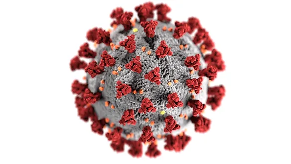

Animated Data Visualisation of the Covid-19 Pandemic using R
Number of infected cases and deaths around the world continues to rise daily. This article visualises how the pandemic has evolved in certain countries using animated line plots on R.

China Breakout
Whilethe true origin of the virus remains debatable, the very first reported covid-19 case was detected in Wuhan City, Hubei Province of China. Since then, the numbers have skyrocketed. Using the numbers reported in the daily situation reports by World Health Organization (WHO), let’s visualise how the outbreak has developed since 1st February 2020 using gganimate on R.
The figure above illustrates how the number of cases increased day by day. The exact dates are reflected in the subtitle. Over the period of almost two months, the number of confirmed cases has increased from 11821 to 81601 at the point of writing. From the graph, we can see a sharp increase in cases on 14th February. It can also be seen that the rate of increase seems to decline since March.
Southeast Asia
Next, let’s visualise how the virus has developed closer to home. The figure below illustrates the breakout in certain Southeast Asian countries.

At the start of February, Singapore was leading the charts over its neighbours. Things have changed very quickly since early March. The number of reported cases in Malaysia surpassed Singapore on 15th March. Presently, the pandemic is faring much worse in many other Southeast Asian countries as compared to Singapore.
Rest of the World
Covid-19 was announced a pandemic on 11th March 2020 given the alarming levels of the virus outbreak. In such a connected world today, it was hard for any countries to get off the hook. Let’s take a look at some other notable countries being hit.
The graph clearly shows the trajectories of the virus spread differ between countries. For example, there was a sharp increase in number of cases in South Korea during the second half of February. The rate of increase quickly slowed in March. On the other hand, Italy is still facing an exponential manner of spread at the moment. Based on the figures, we can infer the extent of success in countries’ attempt to contain the virus.
Data visualisation code and dataset can be found on my github.